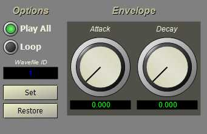

The WFSynth instrument plays a wave file. The wave file can be played once or looped, and a simple AR envelope may be applied to the file for fade-in and fade-out.

The editor for wave playback is shown below.
The "Play all" switch causes the sound to be played through to the end, indendent of the note duration. The "Loop" switch causes the sound to loop through the note duration. The "Wavefile ID" value selects one of the wavefiles associated with the project. The "Attack" and "Decay" knobs set an envelope for the wave file. This allows the sound to fade-in or fade-out if needed.
In order to efficiently manage multiple files, the instrument uses a cache of wave files. These wave files are specified in the project file using the wvfile tag. Each file is assigned an ID number when it is loaded that must be matched with the ID value for the WFSynth instrument.
The WFSynth instrument has three modes of operation. When the loop parameter is set to 1, the instrument will loop over the file while playing. When the play all parameter is set to 1, the instrument will always play to the end of the wave file independent of the note duration. These two options are exclusive; you can loop the sound or play all but cannot specify both options. If neither option is turned on, the instrument will play the wave file only for the duration of the note. If the file is longer than the duration\ of a note, the file is cut off when the note is stopped.
The following table shows the parameter numbers and the equivalent XML tag and attribute values for the WFSynth instrument.| Parameter | Tag | Attribute | Name |
Use |
|
16 |
wvf |
id |
wvfid |
ID of WAVE file |
|
17 |
|
lp |
wvflp |
Loop flag, |
|
18 |
|
pa |
wvfpa |
Play all flag, |
|
19 |
env |
ar |
envar |
Attack rate |
|
20 |
|
rr |
envrr |
Release rate |
<instr> <wvf id="" lp="" pa="" /> <env ar="" rr="" /> </instr>